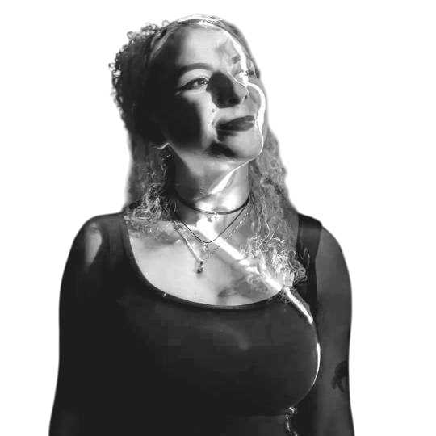

Mini Bio!!
Natália Valadão é estudante de Artes Visuais. Sua produção artística tem como ponto de partida o desenho e investiga temas relacionados à maternidade, à infância, à memória e aos afetos. Em sua pesquisa, busca compreender como as experiências pessoais podem ser transformadas em narrativas visuais, estabelecendo diálogos entre o íntimo e o coletivo.